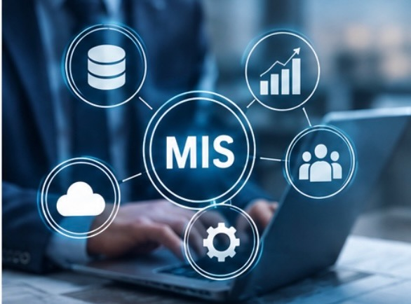

MIS & AI EthicsWebsite OverviewEllie DavenportOctober 21, 2026Home | AI Usage | Security | About Us Welcome to My Website This website explains how Management Information Systems help businesses organize information and make decisions. It also goes over artificial intelligence and how people can abuse and properly use AI correctly. This website also goes over how AI can be used responsibility. You can learn more about technology through. MIS connects people, data and computers to overall help buisnesses. You can learn more by checking out Gartner, MIT Technology Review, and CISA. This website also goes over cybersecurity and ways to protect your information Understanding these topics helps people make good choices when it comes to using teachnology and keeping their informaiton safe. This website goes over common topics in Management Information Systems, such as artificial intelligence, data, and cybersecurity. This website explains how technology helps organizations manage information and make better decisions. The AI Usage page includes the responsible and irresponsible ways of using AI. The Security page explains malware and cyber threats. The About Us page shares what I learned from this assignment. All together, these topics show why responsibility in the use of technology is so important in this digital age. Important MIS Topics
Get in Touch: edavenport@tamu.edu |